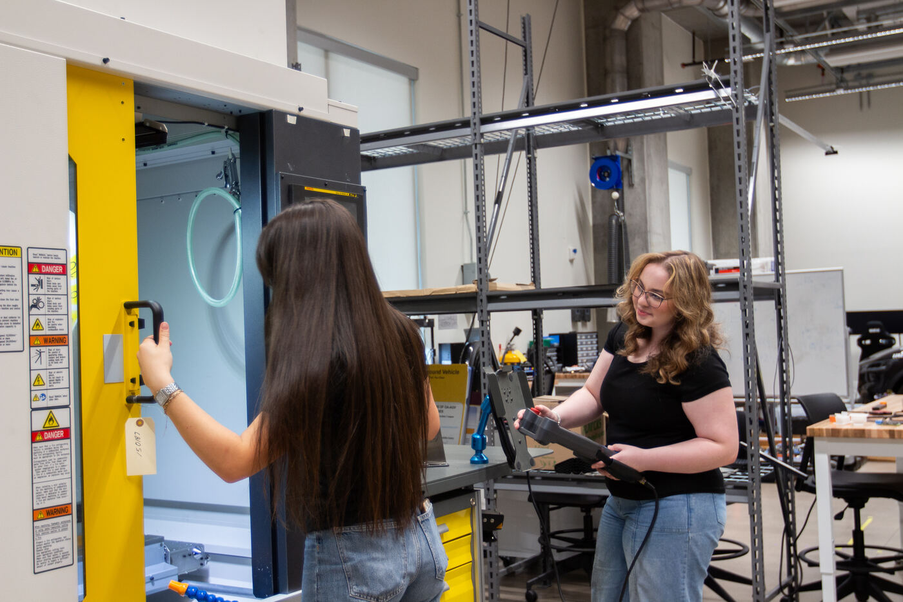

← Back to facilities
Facilities & equipment
CNC machining (subtractive manufacturing)
What it is
Subtractive manufacturing - cutting parts from solid stock with computer numerical control (CNC) machine tools. The lab's machining capability goes up to 5-axis CNC, where the tool and the part move along five axes at once so complex shapes are cut in a single setup.

A robot machine-tending cell: robots and machine tools working together.
How the lab uses it
Machining is where manufacturing meets automation in this lab: robots tend machine tools, and students see both sides of a modern production cell. CNC programming also appears in the school's graduate curriculum (for example MFG 598 - CNC Computer Programming).